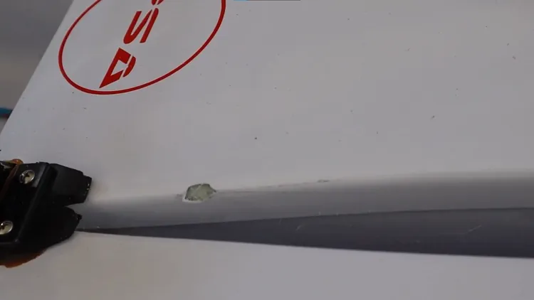
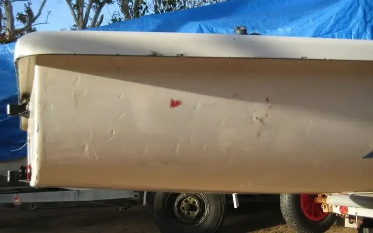
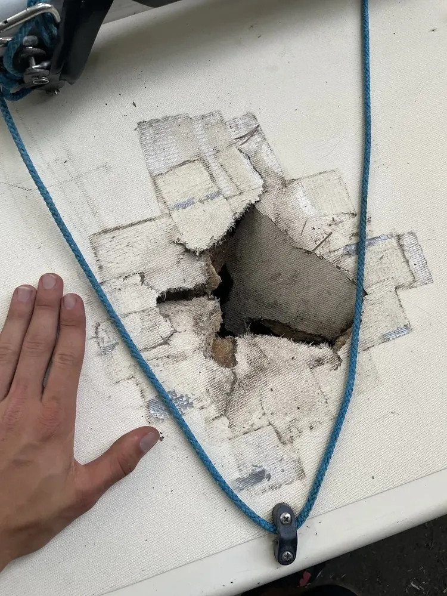
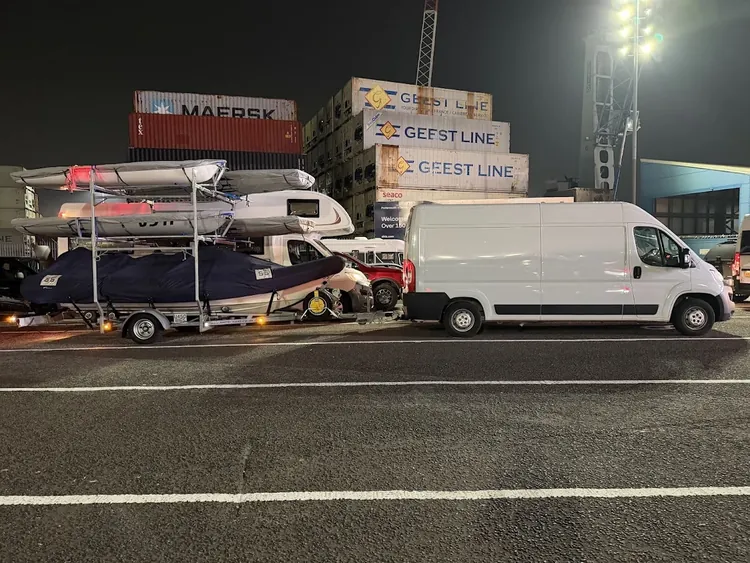
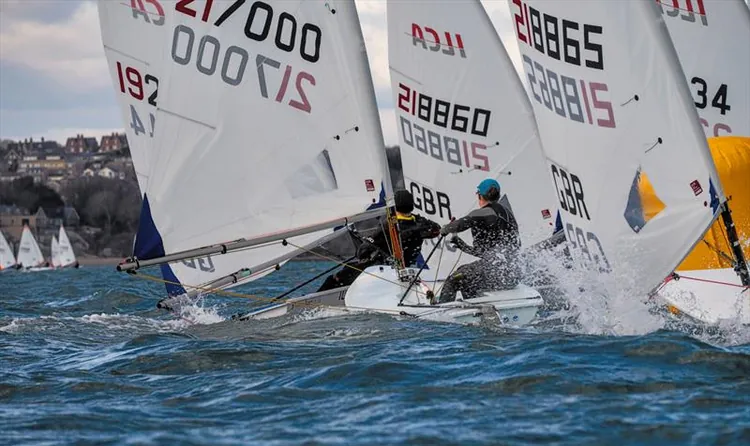
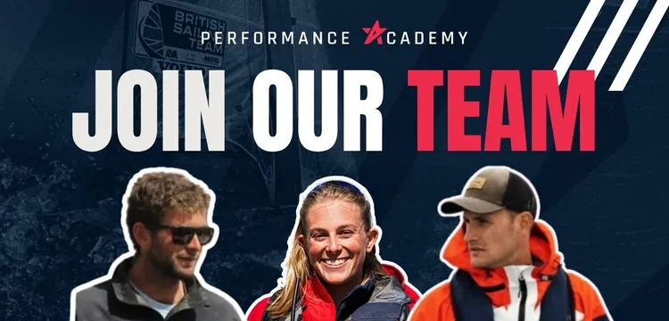
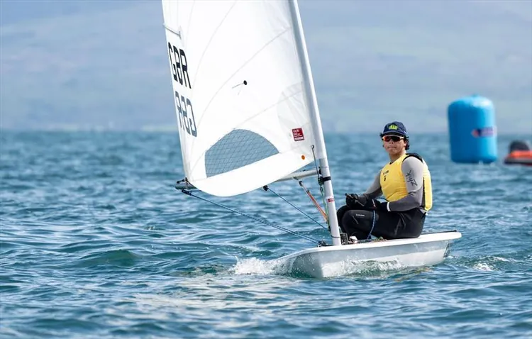
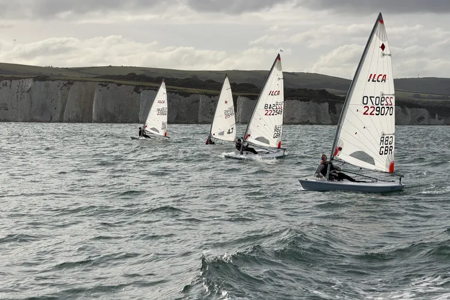
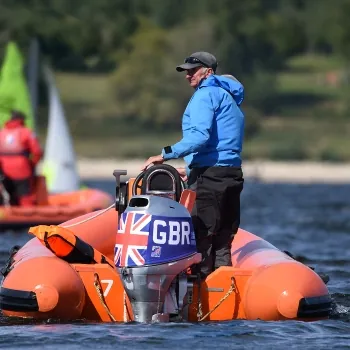
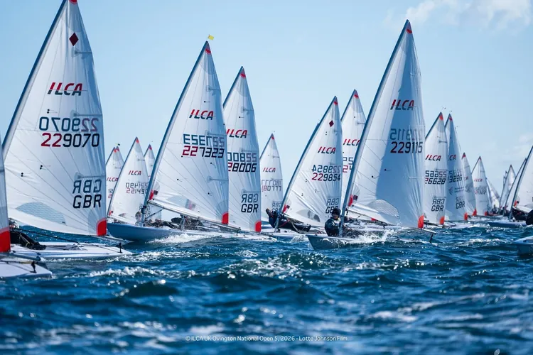

As you may imagine, there is no “one size fits all” answer to this question. Which rig you choose and how you choose to approach your ILCA journey can vary massively from person to person. Here I will attempt to provide a bit of guidance as to what may influence your decision.

Height, weight, age, and sex are the primary drivers of which boat class you select. Ultimately, ILCA 4 has the smallest sail size and so sailors of this class are typically the shortest and lightest of the three. A rough estimate of the optimal race-weights at the youth level for each class is as follows:
| Class | Optimal youth race weight |
|---|---|
| ILCA 4 M | 64-67kg |
| ILCA 4 W | 58-64kg |
| ILCA 6 M | 72-75kg |
| ILCA 6 W | 65-70kg |
| ILCA 7 U19 | 79-84kg |
Weight relative to your sex is likely the primary factor determining which class suits you best. Keep in mind that the list above discusses optimal race weights internationally, not transition weights. Given that most sailors move into ILCAs at the end of summer in time for the Autumn National Open series, this list may give an indication of what you will want to weigh in 12-24 months time. However it does a poor job of telling you for which boat class you are best suited. The following list attempts to do just that. Keep in mind that the ranges are much greater at this stage since you are attempting to estimate what your weight will be in 12 months time, and subsequently which class you should choose now based on your race weight next year.
| Class | Transition weight |
|---|---|
| ILCA 4 M | +50kg |
| ILCA 4 W | +46kg |
| ILCA 6 M | +64kg |
| ILCA 6 W | +58kg |
Height generally ties closely into this estimation of transition weight vs race weight. A taller but skinnier sailor is more likely to fill out as they progress through puberty, and gain a significant amount of strength and mass over their first year. Already shorter and stockier sailors may be less likely to gain significant weight over the course of a year. A sailor’s height and family history can help inform this estimation.
The final physical component for which we have yet considered is age. As it may seem obvious, the younger you are, the more likely it is you should be in an ILCA 4 vs an ILCA 6. Most boys will typically transition from a 4 to a 6 at age 15 or 16, with a couple fast growers moving early at 14. Girls on average will take a year longer to transition into the ILCA 6 (somewhere between 15 and 17). Moving into an ILCA 6 at a younger or older age is neither good nor bad, but each brings with it its own unique set of challenges and benefits. Try to disassociate the decision of which boat class to choose from those of your peers. Make the decision that is best for you and your situation, not for your friends or competitors.
To sail ILCAs you need a boat. This used to be quite a simple affair, but has since become a tad more nuanced than merely purchasing a second hand Laser from your local club. Let’s begin by introducing the main manufacturers of ILCAs and their associated national dealers in the UK:
- Devoti - Sailing Chandlery
- Element 6 - SailingFast
- Ovington - SailingFast
- Nautivela - GP Watercraft
- PSA - ILCA Direct
Of the list above, the first component of each line item is a boat manufacturer (e.g. Element 6, Ovington, Nautivela, etc.), and where the second component are those manufacturer’s national dealers (e.g. SailingFast, Sailing Chandlery, etc.). Each manufacturer will only ever have a single national dealer within each country, and so these are the only suppliers of brand new ILCAs. The sole exception is that Ovington, being a UK-based manufacturer, does sell direct to consumers if you so desire.
With all of these boat builders around, it begs the question of which ILCA should you buy? In all honesty, it doesn’t matter. All of these manufacturers build solid boats that perform admirably across a range of conditions. While some brands are preferred by senior sailors, all manufacturers have boats sailed at the professional level. Differences between individual boats are often bigger than those manufacturer to manufacturer, and can vary significantly depending on the specific age of the boats. As a sailor new to ILCAs, any brand of boat shall do.
Now that this is out of the way, the follow up question is as follows: “should I buy a new boat or get one second hand?”. As with almost everything in sailing, this very much depends! If you have the budget, a new boat provides the peace of mind and performance guarantee that a second-hand boat can never quite deliver. A new ILCA these days will run you somewhere between £8000-£9000 with all of the bells and whistles (carbon top section, fancy blocks, etc…). This is no small chunk of change compared to what many junior boats cost at the moment: £4000 for a new Optimist, £4500 for a new Topper. Almost everyone in ILCAs starts out with a second hand boat, myself & James included!
Below is a table of what you may expect to pay for a second hand boat of varying ages:
| Boat age | Price |
|---|---|
| New | £8000-£9000 |
| 1 year | £6700-£7000 |
| 2 year | £6000-£6300 |
| 3 year | We’re still working on this |
| 4 year | We’re still working on this |
| 5 year+ | We’re still working on this |
Do not get too caught up on the exact rig that comes with the boat. There is a relatively strong second hand market for all ILCA classes, and so you can store the extra gear in your garage or sell it on as you desire. There are a variety of things you will want to inspect/replace regardless of which rig you purchase. Individual components to convert between the rigs can be purchased for not a large sum new or second hand. The key differences between the classes being the lower mast (AKA bottom section), sail (obviously), battens, and the primary lines of your sail controls. Everything else from the ILCA 4 through to the ILCA 7 remains identical.
When you go to look at your ILCA before purchasing, there are a couple of things you’re going to want to inspect before pulling the trigger. First things first, you’re going to want to flip the boat over on the trolley and run your hand on the underside of the hull. From experience, everyone does this, whether they know what they are looking for or not! In reality, one or two well-placed questions and a critical eye can do a lot more than feeling the bottom of a boat will ever tell you (top tip: all of them feel like that, so no need to bother).
Begin by feeling around the edge of the boat (the gunnel). You are looking for any huge cracks or pieces of damage that may cause the upper and lower deck to separate. Roughness or cosmetic dings are to be expected (even relatively new boats have them; it is simply a by-product of ILCA racing). All being well, ask the current owner about any repairs that have been made to the hull. As a rule of thumb:

Photo: Dan Self Sailing, YouTube Small gelcoat repairs on the gunnel, upper deck, or cockpit are inconsequential and primarily cosmetic.

Photo: Laser Sailing Tips Any repair to the underside of the hull is worth further investigation (gelcoat only repairs are completely ok, fibreglass repairs should have been performed by an experienced boat workshop).

Photo: r/sailing on Reddit Larger scale repairs (i.e. cracking along the gunnel or a fibreglass repair to the mast-step) may be a cause for concern, and inspected thoroughly prior to purchase.
If the inside of the boat is dry and it does not leak when sailed, then it is almost certainly a good boat (even a few of the new ones leak a bit when new, so it is not necessarily something to worry about).
Once you have asked about the hull, the only remaining thing to check are the foils. Again, look for dings or scrapes. All damage can be repaired by yourself with a little bit of skill, or a workshop is more than capable of returning the foils to basically as good as new.
You will now have decided whether to purchase an ILCA or not. If you have, hurray! Now onto the next steps, an ILCA sailor’s worst enemy… boatwork. Below is a list of key components you will likely want to check or replace as necessary. They are common culprits of breakages or sub-par components on second hand boats.
- Control Lines → Resize or replace primary control lines (the piece of dyneema) on the kicker and downhaul (outhaul is usually fine as is). Both of these are prone to snapping when worn. It is important that they are the correct length, as when they are too long you will be unable to pull on enough kicker or downhaul when it is windy (too short and you will have the opposite problem when it’s light). Read more about setting up your control lines here. On a similar note, secondary control lines should be replaced semi-frequently once the outer sheath is beginning to look worn.
- Rivets → Check all rivets on the boom and bottom section. They commonly loosen and pull out. Specifically check the rivets at the end of the boom holding the block, and the ones on the bottom section around the kicker tang. If they are loose, drill them out and attach a new rivet using a rivet gun. There is no need to purchase a new boom/bottom section on this alone.
- Toestrap → Over time, the front of the toestrap will rip around the bolts holding it in place. Eventually, this can cause the toestrap to rip completely and come undone whilst sailing. You need to be unlucky for this to happen to you, but it is still best practice to replace the toestrap every 1-2 years regardless (senior sailors replace them even more frequently). Note that there is no reliable way to tell how long a toestrap has left in its life without undoing the bolts holding it in place. Always use silicone when rescrewing bolts into the hull. Top Tip: all professional ILCA sailors to my knowledge use a Zhik toestrap as it is the grippiest (other toe straps work equally as well however for a lower price point).
- Daggerboard Friction Pads → There are two friction pads for the daggerboard on an ILCA, front and rear. Both will likely need replacing on a second hand boat. I prefer the MkII rear friction pad, but this is just a matter of personal preference.
- Mainsheet → This will snap at some point (usually foreshadowed by the outer sheath becoming very fluffy right where it goes through the mainsheet block on an upwind setting). Have a spare for when it does.
- Tiller → Aluminium ones are bad as the traveller block will constantly get stuck in every tack or gybe. Triangle carbon ones are better, usually having solved the block getting stuck issue. Low-profile carbon tillers are best. The traveller block will hardly get stuck, and they also shouldn’t annoyingly hit the traveller clam cleat every time it crosses the centre line. However they can be a little fiddly to find the exact tiller-rudder combo that achieves this balance well.
- Traveller + Block → Check for wear in the places you can’t see (underside of the block and in the corners of the rope). If worn, replace as appropriate.
Hopefully now you have a working ILCA and you’re ready to set sail! Before moving onto some of the more engaging topics, here are a couple of miscellaneous FAQs on boat equipment that may be useful:
A final brief note on the sailing kit (i.e. your clothing). There are two ILCA-specific pieces of sailing kit that are essential to performance. A pair of hiking pads, and a pair of supportive sailing boots. There are many brands and options to choose from for each of these. Zhik hikers and boots yet again feature commonly among the professional field, but come with the associated price tag. I personally have had success with the Gill Aero 2.0 as a cheaper alternative, but any manufacturer will do. The key things to look out for are a laced fastening system, an ankle support strap, and stiff rubber supporting the ankle. Hiking pads are similar in that the brand or design is not hugely significant, simply find a style you like and stick with them. This could be an internal system such as power pads, or hiking pads integrated into the actual wetsuit neoprene. Common brands seen among top sailors include Musto, Zhik, Sandiline, and Vaikobi to name a few. The only thing that is important is that you have both of these pieces of clothing prior to sailing your ILCA in windy weather.

Towing
Photo: James Foster
Depending on your idea of a good time, I may or may not have lied about moving onto more interesting topics of conversation…
Towing! By this I mean the act of transporting your ILCA from venue to venue by means of a trailer behind a car or similar, and not the means of pulling an ILCA through the water with a RIB (although the do’s and do-not’s of that deserves a whole article unto itself).
Why? How? What? Where? When? How? A whole host of questions which you may or may not be wanting the answers to. If you have towed a trailer before or are used to transporting boats, then I would recommend skipping right past this section as you will find it incredibly dull. If you do not feel confident in either of these two things, then well done! You have found just the right place.
Transporting your boat from venue to venue is an essential part of any ILCA sailing programme. Here I intend to give a short list of tips and tricks you may find useful coming into the class.
There are two main ways of transporting an ILCA. The first is upside down. The second is the right way up (mast to the sky so to speak). When transporting a boat upside down, there are one or two things to consider:
Covers →
Top cover then bottom cover, typically prior to putting the boat on the trailer/roof of the car (it's hard to do the bottom cover straps up when the boat is upside down). The bottom cover may be a little tight to get on when you first try. Begin with the front and move to the stern, pulling the cover towards the back as you go. With a little bit of tugging it should go on nicely. Finally, make sure you do the cover straps up tight before travelling. If too loose, the cover will flap around and rip. Every sailor loses a top cover at one time or another this way. Doing the straps tight will prevent this from happening.
Empty the Boat →
If it wasn’t obvious, make sure the boat is empty before turning it upside down. On one hand, ILCAs can be pretty heavy compared to some other junior boats. An empty boat is always lighter than a full one. Secondly, loose gear floating around in the hull is another sure-fire way of ripping the top cover
Watch out for Blocks →
When sliding/lifting your boat onto the trailer, be careful of the miscellaneous deck fittings. Crunching these against your roof rack is one way to ruin your afternoon. Notably, do not strap the boat down if it is resting on the front deck blocks, the deck cleats, or the traveller clam cleat. Doing so could push them through the deck and damage your boat.
Two straps →
Only two straps are needed, done up reasonably tight. One on the front and rear bars, hooked under each side before passing over the boat. More straps is not always better. Make sure the ones you do use are secure (no more ILCAs bouncing down the motorway please).
Many of these same principles apply to travelling with your boat right side up. This is typically done by strapping your hull to your trolley, before lifting the entire thing (hull and trolley) onto a road base. The only things to note are your covers should be placed on bottom cover first, then the top cover (stops the cockpit filling with water when it rains on the way home). The second thing is to be wary of strapping the boat too tight to the trolley. Pulling too tight on these straps without a supportive sling to take the weight of the hull can cause damage to the gunnel and the deck to separate from the underside of the hull. For this reason, I recommend travelling with boats placed upside down when possible, as you do not run this risk when travelling with boats upside down. However, if this is not an option, boats can still safely be transported on a road base right side up. Buying a supportive sling is the best route to avoid concern, but be aware that there is still some risk.
Now that we have gotten that over with, onto the rest of this guide.
Where were we? Ah yes, the interesting bit…
Training! More specifically, training groups and what training opportunities are available to sailors new to ILCAs. All the gear and no idea. Time to fix that.
As is the case in most dinghy classes, the training environment is an ever shifting and changing landscape. A prominent group one year may feel lackluster the next if one or two sailors age out or there’s a change in coach. Despite this, there are some staples in the community that form the bedrock of a performance training environment within the class.
First things first. No, there is no official national squad in ILCA 4, run by the RYA or otherwise. While there are training groups which aim to emulate the environment and ethos of a national squad, none of these achieve the full desired effect that a national squad could achieve. Now that we have gotten that out of the way, more on what training is on offer.
There are many similarities among the training opportunities available to ILCA 4 and ILCA 6 sailors. I will begin by presenting those available to ILCA 4 sailors before highlighting some key differences that arise between the classes.
Domestic training environments are typically segmented into two categories: National training and Regional training. These categories refer less to where sailors may attend the training from, and more to the quality/phenotype of the sailor attending the training group. Regional training typically refers to any group designed for sailors who do the majority of their training and racing regionally, with aspirational or target events being at the national level. National training however is targeted towards sailors who regularly train and compete at the national level, and are seeking to aspirationally compete internationally. There is not always a clear distinction between these categories, with groups sometimes shifting in and out depending on circumstances. In some training groups however, there is a clear cutoff selection criteria that can segregate sailors into a regional or national pool.

We begin by talking about ILCA UK. This is the governing class association within the UK. They are responsible for hosting the national events and supporting the development of sailors all the way through the pathway from junior to Olympic level. As part of its directive, ILCA UK organises a variety of training opportunities throughout the year. The majority of its training lies over the winter months in the form of its Regional Open Training and its National Training. In addition, ILCA UK annually organises an ILCA Skills Week during July/August which typically garners between 150 & 200 boats on a given year. For many of us, this will be our first foray into the ILCA, designed to be for new and experienced ILCA sailors alike.
ILCA UK’s Regional Open Training and National Training provide the foundations of a winter training programme for sailors across the country. The Regional Open Training has no entry criteria and is open to sailors of all abilities. Multiple training weekends are run concurrently across the country in each of the respective regions of England (North, Midlands, East/South East, South/South West). There are typically 6 weekends spread across the winter from September through to March. The target demographic for these groups are sailors looking to “progress from regional to national level”.

ILCA UK’s National Training is a closed training programme aimed at bringing together skilled sailors from across the country and preparing them for international racing. 5 of these weekend training camps are run across the winter from November to March. The qualification criteria for attendance is to rank in the top 50% of boys/girls in 3 of the 5 following events: UK Nationals, National Open (4, 5 & 6), and the National Inland Championships. Training is typically delivered by high quality and experienced ILCA-specific coaches that remain relatively consistent across the winter. In previous years, the coaches for the ILCA 4 National Training have been James Parker-Mowbray, Alastair Brown, and Kai Wolgram. In the ILCA 6, coaches have included Charlie Linsell and Allison Young. All are well established professional sailors or coaches in their own right, delivering the highest quality training environment available domestically. Attendance can vary from 6 sailors up to 18 depending on the specific dates, with all training being based in WPNSA.

The Andrew Simpson Centre Performance Academy (colloquially known as “ASC training” or the “Performance Academy / PA”) is based out of WPNSA and is ILCA UK’s International Event Support partner only (it is not a training partner). Additionally, the Performance Academy delivers its own series of invitational training in the ILCA 4 & 6 classes. Acceptance into their private group requires an online application with a deadline of late August. While criteria for acceptance is not widely published, invitation to its Performance Squad is thought to require a similar standard to ILCA UK’s National Training. The Performance Academy also offers a Development Squad with a slightly more lenient qualification criteria. In practice, coaching sessions are often run with a mix of sailors from the Performance Squad and Development Squad. These sessions run for much of the year and are not confined to a particular season.

In the ILCA 4, the RYA runs training through its Regional Training Groups. Similar to ILCA UK Regional Training, these are sessions run with sailors from a specific region rather than nationally. Regions follow a similar structure to those previously mentioned. Training sessions can be mixed at times with ILCA 4 and 6 sailors training together. The RYA offers between approximately 5-6 weekends of training over the winter period. These will be at a variety of venues, and may include a joint-regional training weekend at a national venue (i.e. all regions train at Pwllheli or WPNSA once over winter for a big joint camp). Apart from this, the RYA does not have a national-level presence in the ILCA 4 class.
In the ILCA 6, the RYA also offers training through its British Youth Squad. This is the dedicated British national squad for the ILCA 6, designed to bring together the best youth sailors from across the country. The quantity of training can vary from year to year, but also typically involves some degree of international event support. For a newly transitioned sailor into the ILCA, the British Youth Squad should be a long-term goal, and not something you aim to achieve within your first 12 months in the boat.
In addition to the RYA support mentioned above, RYA Cymru Wales has its own Welsh National Squad only for Welsh sailors. This is a joint ILCA 4 and 6 squad, holding up to 6 weekends of training over the winter months spread across North and South Wales. While attendance can vary from year to year, the quality of coaching delivered is never questioned. It is a little known fact that Wales holds a cluster of internationally renowned sailors and coaches alike. Welsh National Squad has the honour of being led by Alan Williams (a British Youth Squad coach for many years amongst other accolades), with guest appearances of coaches such as Chris Gowers (the ex-BST ILCA 7 head coach).
While the above description details some of the more regularly organised and official training offerings organised domestically, there are also a range of private training opportunities available to sailors. A key note from my side is that the availability of these opportunities may change season to season or sometimes month to month (as is often the case with privately organised training groups). With that out of the way, below are some of the more notable training groups across the UK.

Beyond The Shift organises ILCA 4 and 6 open training out of Poole YC and WPNSA. This training is led by myself (Kai Wolgram) and James Foster, who are both current active full-time ILCA 7 sailors on the British Sailing Squad. Coaching acts as a way to support our Olympic campaigns financially, whilst giving back to the ILCA community. Training sessions often have between 6 and 12 sailors in attendance from across the south coast. The frequency of clinics can be irregular (fitting into the free-time around our own sailing), and so should be viewed as a supplement to a broader training programme rather than its foundation. To find out more about the training or racing opportunities on offer, further details can be found here.

Draycote Academy hosts 5 weekends of training for both ILCA 4 and 6 from October to February. A full list of attendees can be found on their website. Whilst solely based at Draycote, and thus an inland piece of water, the training can be well attended on occasion and provides a productive training environment under the guidance of Steve Irish. I believe that sailors must sign-up for the whole programme if they wish to apply, but I may be misinformed on this matter. This group can provide solid supplementary training to some of the aforementioned options listed above, especially for those who live in the south east or around London.
Among the publicly listed and searchable training groups that I have mentioned, there also exist certain domestic private training groups. Admission typically requires a well-known name in the ILCA fleet and a history of results backing-up your skills. Newly transitioned sailors will not be on the radar of such groups, and so it is unlikely worth your consideration at this stage in your sailing journey. An example of one such group would be an ILCA 4 training group based out of the Solent region, organised by Tim Hulse in partnership with GP Watercraft. Or perhaps 1-on-1 sessions with Charlie Linsell mid-week out of WPNSA (although his time may be more restricted these days with other commitments). There may be other such groups floating around the UK, but it is hard to say for certain as it is an ever-changing landscape.
Hopefully this has provided some insight into the domestic training scene for both ILCA 4 and ILCA 6, providing guidance on where you may begin your search for winter or summer training. My final piece of advice is this: speak to other sailors and parents! This is, and always will be, the best source of knowledge of what training opportunities are available at any given time. Fortunately or unfortunately, sailing is a sport predicated on networking (sailor to sailor and parent to parent). Asking around won’t do you any harm, but it could certainly be enlightening.
Nearly there! The final topic hurrah! Racing…
What racing opportunities are there? Which events should you attend, and which are optional? While there are a plethora of international events that I could spend way too long discussing the pros and cons of each, I don’t think that information would be hugely applicable to most of the sailors/parents reading this guide. If you want to know more about the international sailing scene, further information can be found here.
So, domestic racing. It is really quite simple actually. There are eight (or nine depending on how you count) national competitions held annually in the UK. Unless you are sailing at an international level, it is my opinion that sailors should endeavour to attend all eight. They are as follows: six National Open events (3 in spring, 3 in autumn), one Inland National Championships (typically held alternating at Grafham or Rutland on the first weekend of November), one National Championships (hosted by ILCA UK in summer and changes venue annually), and one RYA Youth Nationals (generally held sometime in April and for ILCA 6 + ILCA 7 only).

As I alluded to previously, some or all of these events may form part of the qualification for certain squads, training groups, or events. The majority of these national-level events are included in ILCA UK’s Youth Ladder, intended to showcase a sailor’s national ranking relative to their peers. For those interested in attending international restricted entry events (those that only have a limited number of GBR places e.g. Worlds or Europeans), the Youth Ladder is what determines the pecking order of who gets what places.
So, any sailor who is looking to transition into the ILCA should attend all of these events if possible. They provide the highest quality racing available domestically, and should form the foundation of a sailor’s racing experience throughout the year. Exact dates and venues of these competitions can be found here.
2026/27 seasonOpen the calendarAt a regional level, ILCA UK organises the Grand Prix Circuit. These are a series of regional events that constitute a broader series culminating in an overall champion for each region. This series is a relatively recent addition to the calendar in the past couple of years. Attendance can vary significantly by region, but the events can garner a decent-sized fleet of ILCAs on occasion. For sailors still searching to build their racing toolbox, the Grand Prix Circuit can provide the ideal testing ground for a sailor’s skillset. While not suited to everyone, completing the Grand Prix Circuit can be a valuable stepping stone in a sailor’s development into the ILCA class.
And there we have it! A somewhat complete guide for sailors new to ILCAs. Whilst I imagine my ramblings have left you with more questions than answers, adding anything else to this article would make it too cumbersome to bear. Further information on other related topics can be found here. If you have found the content of this guide useful, please share it with other new ILCA sailors alike.
For those who may have any further questions not covered elsewhere in our guides, or wish to have a more tailored discussion around an individual sailor, please do not hesitate to reach out via email or book in a consultation.
Happy yachting. Ciao for now
Kai
Keep reading
Want help with your first season? See our coaching or join the WhatsApp group.
Book coaching